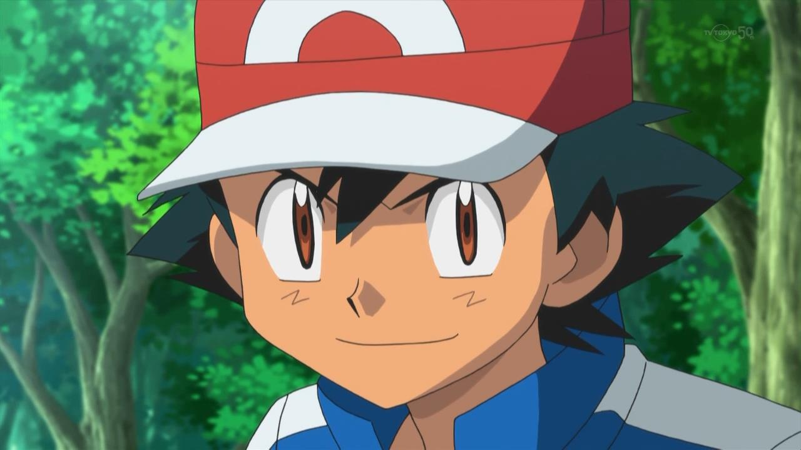
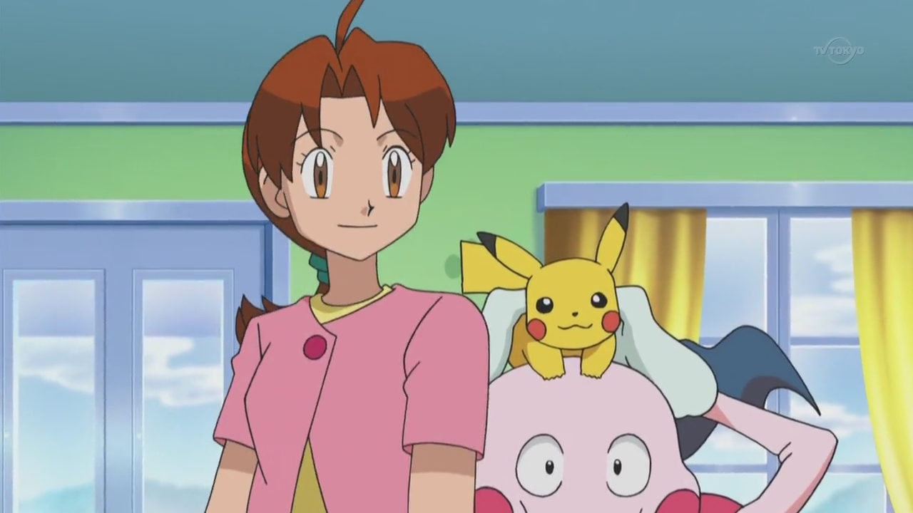
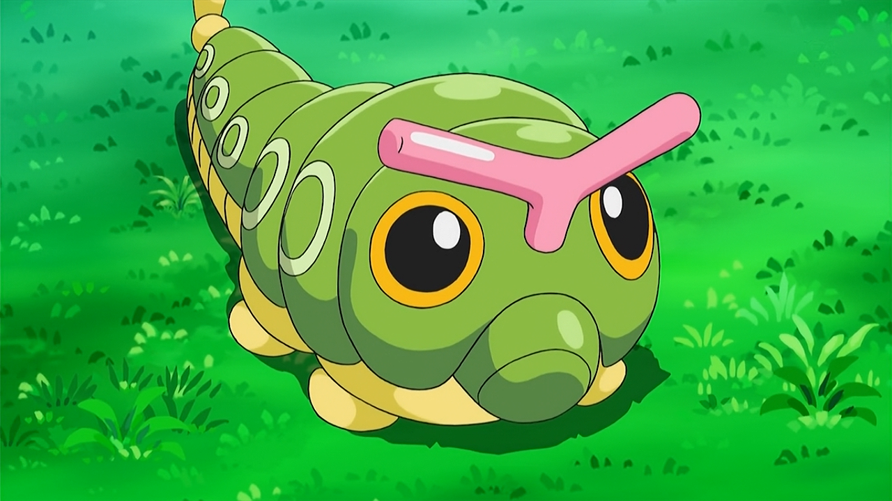
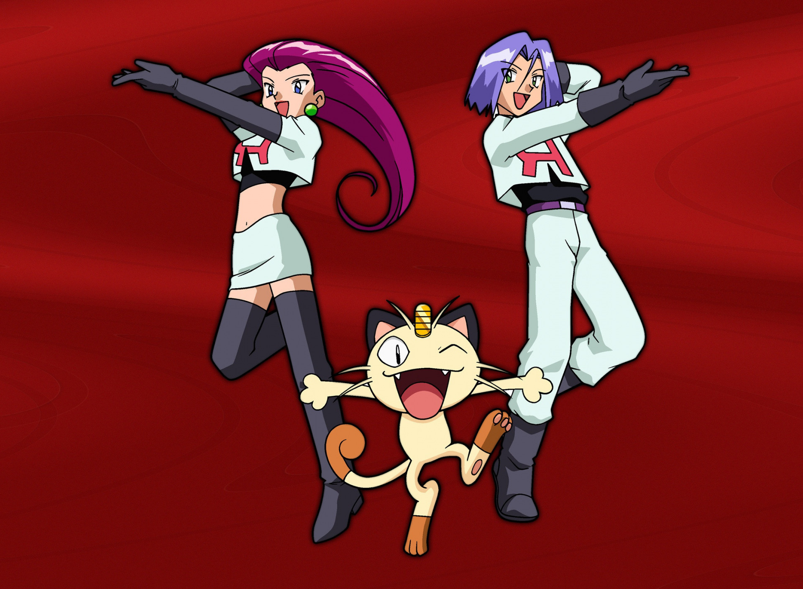

Покемоны
Пикачу — обаятельный зверек, снабженный зигзагообразным хвостом и ярким окрасом,
покоривший сердца как юных, так и взрослых любителей игр и аниме. Персонаж,
издающий необычные звуки, лучится обаянием и добротой, несмотря на воинственную природу.
Биография милого существа прослеживается с момента знакомства покемона с Эшем. Как зверек попал к профессору — неизвестно, но родился он в лесах региона Канто. Возможно, он поступил к ученому из
сафари в Хоэнн или был пойман в городе, куда диких существ влекут электромагнитные импульсы.
Описание будет неполным без упоминания ярко-красных щечек существа. Но внешность обманчива. Зверек относится к существам электрического типа. Это значит, что в битве с другими покемонами применяет разряды электрического тока.
⁂⁂⁂
 Эш Кетчум - главный герой мультсериала «Покемон». На протяжении всех сезонов Эш заводит себе много друзей, некоторые из них становятся его компаньонами. Ему 10 лет и его заветная мечта — стать самым величайшим Мастером Покемонов в мире. Первый стартовый покемон, которого он с большим трудом получает когда ему исполняется 10 лет от профессора Оука — электрический Пикачу, ставший его самым лучшим другом и товарищем.
Делия Кетчум, известная также как Миссис Кетчум — родная мать Эша Кетчума, постоянно появляющийся персонаж аниме. Делия Кетчум — очень добрая, заботливая, любящая и умная женщина, но когда она расстроена или злится — беды не миновать. Прекрасно знает психологию и характер своего сына, и очень-очень гордится им как настоящим героем, способным преодолеть любые преграды на пути к осуществлению своей заветной мечты. Так же рядом с ней всегла находится ее покемон Майми - самый лояльный покемон Делии. Он всегда помогает ей по хозяйству, но если что-то угрожает резиденции Кетчумов, Делия использует Майми, чтобы защитить свой дом.
Катерпи – летающий покемон, стал вторым в коллекции Эша. Может эволюционировать в Метапода и Батерфри. Обитает там же, где и все жуки: в садах, парках и полях Катерпи напоминает зеленую гусеницу с желтыми кольцевыми маркировками вниз стороны ее тела. Его самая известная особенность - ярко-оранжевые чувствительные усики на его голове. Они и большие маркировки формы глаз помогают отпугивать хищников. Катерпи сам по себе добрый покемон. И весьма пугливый. Любит со всеми дружить и сильно расстраивается, когда ему в этом отказывают, особенно из-за такой мелочи, что он гусеница.
В ходе путешествий, Эша преследовали Джесси, Джеймс и Мяут из Команды R, желавшие похитить Пикачу.
До сих пор они преследовали его по всем регионам и преследование продолжается до сих пор.
Команда R - печально известная злодейская организация охотников на редких покемонов. Являются антагонистами практически всех сезонов.
Их цель - поймать как можно больше редких (например, говорящих) и самых могущественных покемонов,
чтобы создать армию тьмы для завоевания мира, но главной целью для них является Пикачу Эша Кетчума.